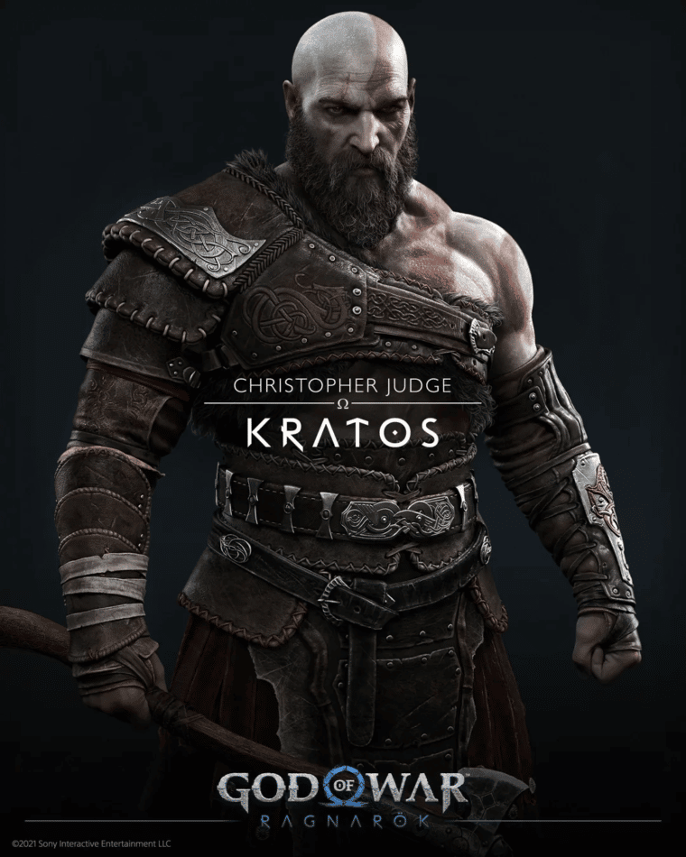

Kratos
Kratos é o principal protagonista anti-heróico da série God of War. Nascido em Esparta, Kratos foi um general militar que se tornou um Deus, e se vingou dos deuses do Olimpo, que o traíram. Nascido na cidade-estado grega de Esparta, Kratos é o filho semideus de Zeus e uma mulher mortal chamada Calisto, embora ele não saiba quem é seu pai durante a maior parte de sua vida. Hera ordenou a execução de Kratos no dia em que ele nasceu, mas o Rei dos Deuses se apiedou da criança e se recusou, deixando-o em Esparta para ser criado por Calisto.
Atreus

Atreus é o filho de Kratos e Laufey, bem como o deuteragonista de God of War. Para os gigantes, ele é conhecido como Loki. Atreus foi concebido entre o grego espartano Kratos e uma giganta nativa de Jötunheim chamada Laufey, a quem ele e seu pai chamam de "Faye". Ele é uma criança enfermiça que precisava ficar saudável o suficiente para a sua jornada. Seu passado não foi extensivamente revelado, no entanto, está implícito que ele e sua mãe viveram sem Kratos por um tempo, pois o próprio Kratos não tem certeza da capacidade de caça do menino e, respeitando os desejos de Faye, não ensinou ele próprio
Mimir

Mimir é o deus do conhecimento e da sabedoria e é um aliado de Kratos e Atreus. Ele era o conselheiro de Odin e embaixador dos deuses, até que Odin o aprisionou 109 anos atrás. Ele é o tritagonista de God of War. Mímir, que significa "o recordador" ou "o sábio" em nórdico antigo, é uma figura da mitologia nórdica, conhecida por seu conhecimento e sabedoria. Ele é decapitado durante a Guerra Æsir-Vanir. Depois, Odin carrega a cabeça de Mímir, que recita conhecimento e conselhos secretos para ele.
Freya
Freya (também conhecida como A Bruxa da Floresta) é uma deusa nórdica que ajuda Kratos e Atreus em sua jornada. Ela era a esposa de Odin, mãe de Baldur e ex-rainha das valquírias. Na Mitologia nórdica, era conhecida como a mais formosa entre as deusas, a primeira esposa de Odim, rainha do Æsir e deusas do céu. Deusa do clã do Ásynjur, é uma deusa da união, do matrimônio, da fertilidade, do amor, da gerência da casa e das artes domésticas. Suas funções preliminares nas histórias mitológicas dos nórdicos são como a esposa e a mãe, mas estas não são somente suas funções. Tem o poder da profecia embora não diga o que conhece, e seja única, à excepção de Odim, a quem é permitido se sentar em seu elevado trono Hlidskialf e olhar para fora sobre o universo.
Thor

Thor (nórdico antigo: Þórr) é o deus nórdico Aesir do trovão, relâmpago, tempestades e força. Ele é filho de Odin e Fjörgyn, marido de Sif, irmão de Týr, Heimdall e Baldur. O pai de Magni, Modi, Lorride, Thrúd, padrasto de Uller e tio de Forseti. Thor nasceu como o filho de Odin e Fjörgyn. Após a entrega do Mjölnir para Thor, não demorou muito para que Odin e Fjörgyn concebessem, Týr, aquela que no lugar de Thor e da maioria dos deuses que eram ruivos, Týr era moreno castanho e isso encantou Odin que se apegou a seu segundo filho, Týr tornando-se "o filho favorito de Odin". Em algum momento de sua vida, ele se tornou marido de Sif e teve quatro filhos com ela: Magni, Modi, Lorride e Thrúd. Ele também, em algum momento, assassinou todos os gigantes de Jötunheim (com exceção de Jörmungandr) e ganhou a temível reputação de mais forte dentre os deuses nórdicos.
Brok/Sindri
Os anões ferreiros, os irmãos Brok e Sindri (algumas vezes chamado de Eitri). Na mitologia, temos a história de uma aposta deles com o Loki. Loki ficaou se gabando que os outros anões irmãos ferreiros, os filhos de Ivaldi, haviam feito os cabelos de Sif (Substituindo os que Loki havia roubado), o navio de Frey e a lança de Odin. Com isso, Brok chamou Loki para uma aposta, apostando a cabeça que seu irmão Sindri conseguiria fazer equipamentos melhores. Loki então aceitou, mas como viu que os irmãos estavam indo muito bem, ele começou a trapacear. Do mesmo jeito, nada funcionou e os irmão ganharam a aposta, fazendo o Martelo do Thor, Javali Dourado de Frey e o Anel de ouro de Odin. Loki, no entanto, argumentou que tirar a cabeça ia danificar o pescoço, o que não estava no acordo. Mas os Aesir deixaram Brokk costurar a boca de Loki para que ele não ficasse se gabando e mentindo até que aquilo saísse. No jogo: Brok e Sindri, aqui, são brigados um com o outro por um achar-se melhor que o outro. Enquanto Brok é um pouco mais rude, Sindri é bem mais educado, mas um pouco covarde. Durante a história do jogo eles te ajudam no seu equipamento (armaduras e armas), já que são ferreiros. Os dois irmãos também fizeram o martelo de Thor, e foram obrigados a fazer uma estátua do Deus. Eles também fizeram o Leviathan, aram principal do Kratos, que antes pertencia a Laufey, esposa de Kratos. E os dois, principalmente Brok desprezam os Deuses Aesir.